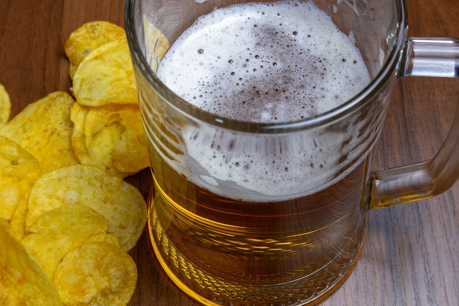
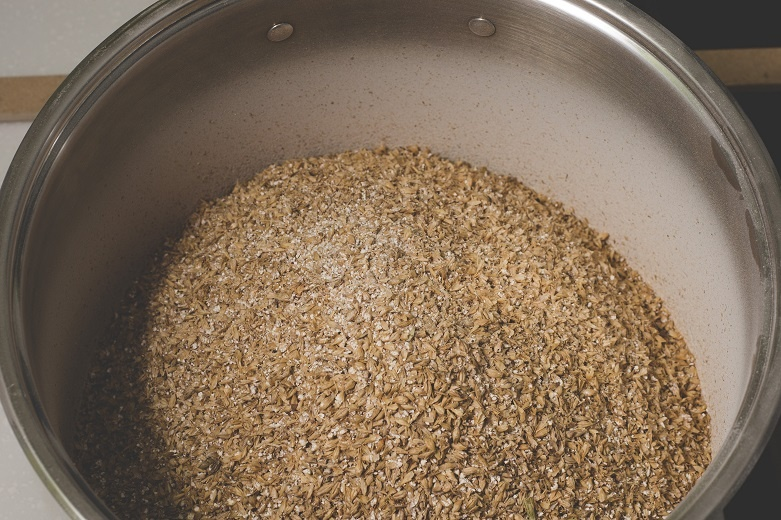
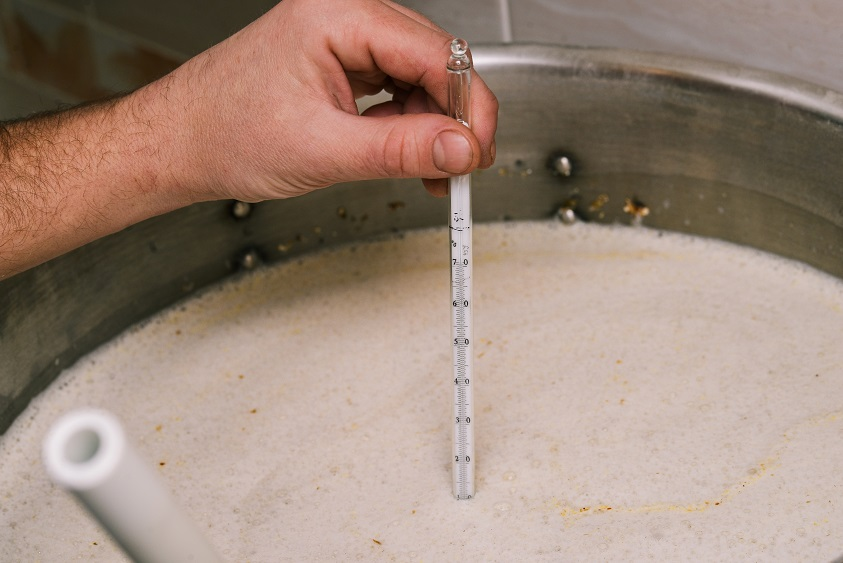
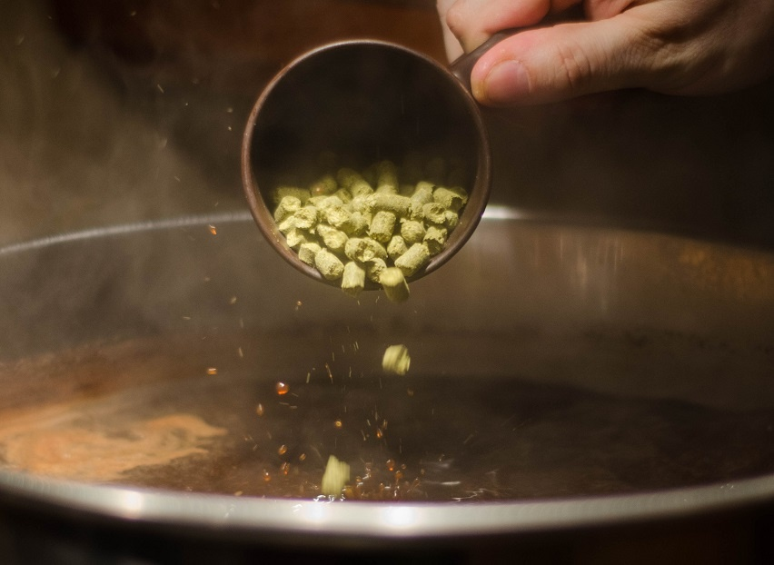
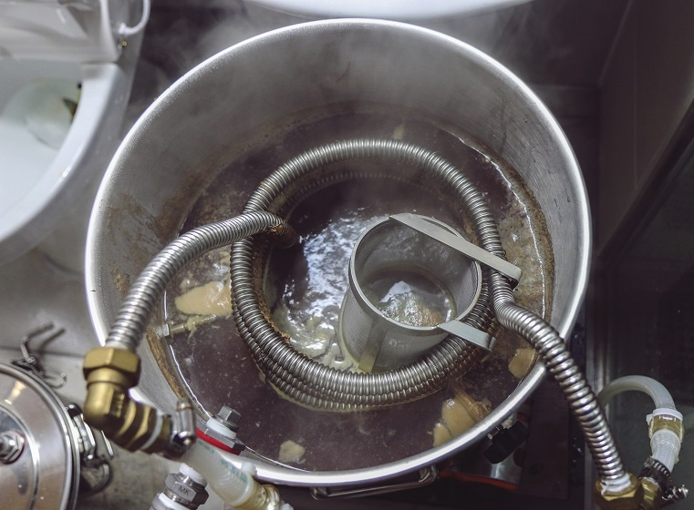
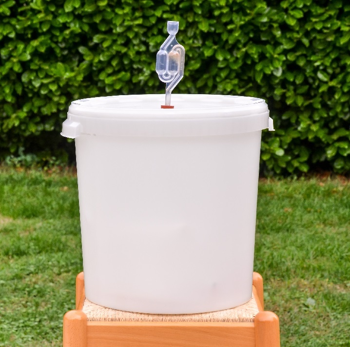
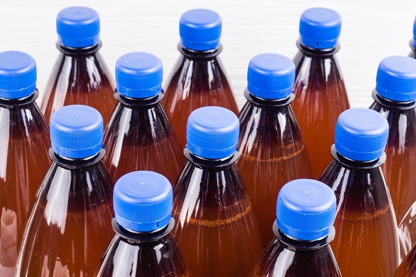
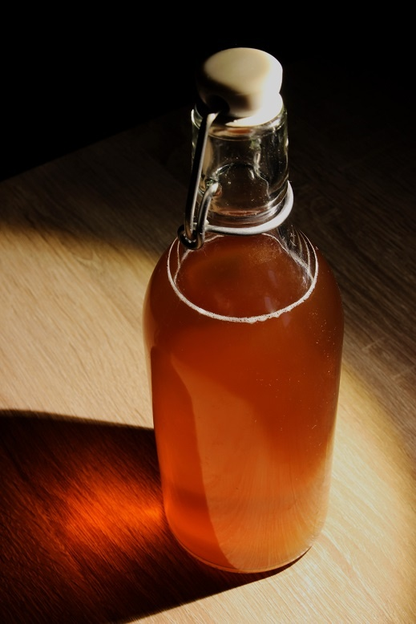
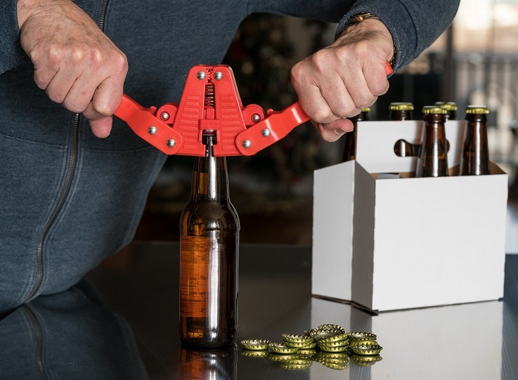
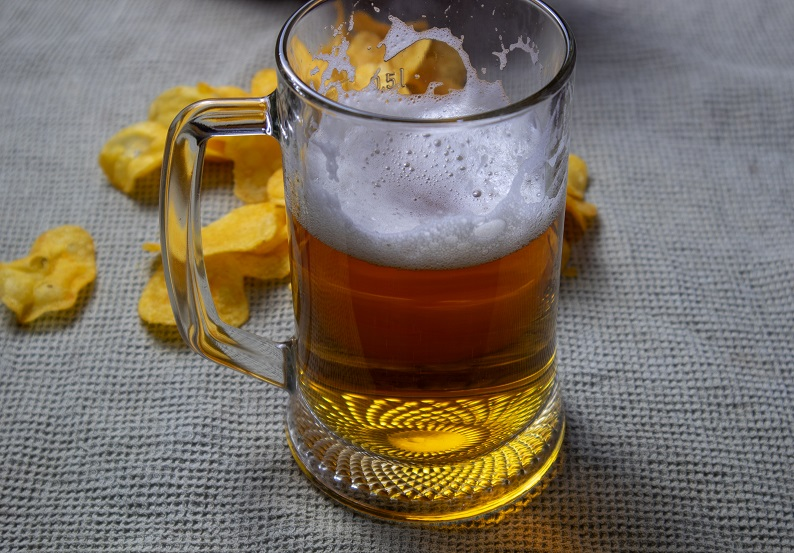

Домашнее пиво выгодно отличается от дешёвых магазинных аналогов натуральным солодовым вкусом и отсутствием консервантов. При этом специальное оборудование (пивоварня, чиллер и т.д.) хоть и облегчает процесс приготовления, но не является обязательным: достаточно иметь объёмную кастрюлю для варки, бродильную ёмкость с гидрозатвором, термометр и тканевый (либо марлевый) мешочек. Однако нужно учитывать, что даже в этом случае сделать пиво в домашних условиях сложнее, чем любой другой алкогольный напиток. Предложенный рецепт основан на технологии варки пива в кастрюле в мешке, и ещё до покупки дорогостоящего оборудования позволяет сориентироваться, насколько классическое зерновое пивоварение интересно как хобби, которому нужно уделять много времени и сил – это точно не способ экономии на магазинном пиве.
Выбор ингредиентов
Солод
Солод – частично пророщенное, затем высушенное зерно, источник сбраживаемых сахаров (отвечают за крепость) и сухих веществ, которые больше других ингредиентов влияют на цвет, аромат и вкус пива. Обычно используются ячмень и пшеница, поскольку эти зерновые хорошо сочетаются с горечью хмеля.
Если солод для виски можно прорастить и высушить в домашних условиях, то для пива лучше взять заводской. Дело в том, что пиво не подвергают дистилляции (перегонке), нивелирующей многие недостатки исходного сырья. Фактически пиво – это питьевая солодовая брага с хмелем на специфических дрожжах, а потому требования к качеству солода в несколько раз выше, чем для дистиллятов. В самодельном солоде неизвестны важные параметры, влияющие на органолептические свойства готового напитка.
Для приготовления пива по этому рецепту требуется пивной солод со следующими характеристиками:
Подробнее о видах солода для пива и значении параметров можно прочитать по ссылке. Приведённые характеристики солода всегда указаны в сертификате качества, который предоставляют магазину с каждой новой партией.
Хмель
В пивоварении используют только женские соцветия хмеля обыкновенного (humulus lupulus). Листья, стебельки, а также другие части растения слишком горькие и содержат мало ароматных эфирных масел.
Функции хмеля в пиве:
Самая главная характеристика хмеля – содержание альфа-кислот, от этого параметра напрямую зависит горечь пива. Предложенный рецепт рассчитан на альфа-кислотность хмеля 4.5% с возможным отклонением в несколько десятых долей процента – 4.3-5.0%.
С домашним или аптечным хмелем результат непредсказуем, поскольку неизвестно содержание альфа-кислот. К тому же эти виды могут добавлять пиву резкие травяные тона из-за неправильной сушки.
Хмель продаётся в двух основных формах: гранулированной и как экстракт. Для домашнего пива рекомендован гранулированный хмель, поскольку экстракт слишком концентрированный – сложно рассчитать дозировку для варки небольших партий (30 литров и меньше). Подробнее о хмеле для пива рассказано в отдельном материале.
Дрожжи
Пивные дрожжи – штаммы, предназначенные для сбраживания сахаров в солодовом сусле. Главное отличие пивных дрожжей от остальных видов – пониженная температура брожения, благодаря чему накапливается меньше примесей, ухудшающих вкус.
Если заменить пивные дрожжи на спиртовые, хлебопекарные или винные, то вместо пива получится солодовая брага со специфическим вкусом. Аптечные пивные дрожжи тоже не подходят, поскольку являются отмершими дрожжевыми клетками, а не активными микроорганизмами, способными к брожению.
Существует два базовых вида пивных дрожжей:
Хотя около 80% промышленного пива сделано на лагерных дрожжах, для любительского пивоварения больше подходят элевые виды, поскольку в домашних условиях с ними проще работать: для брожения достаточно комнатной температуры. Сусло на лагерных дрожжах придётся дополнительно охлаждать в бродильной ёмкости, постоянно контролируя и поддерживая температуру.
Вода
Вода должна соответствовать всем питьевым нормам и быть мягкой: с минимальной концентрацией солей и щёлочноземельных металлов. Лучше всего подходит бутилированная, на втором месте – из уличных автоматов (диспенсеров), настроенных на максимальное смягчение. В жёсткой воде сильнее чувствуется «грубая» горечь хмеля.
Оборудование
Минимальный набор оборудования для приготовления домашнего пива:
Дезинфицирующий раствор
Из-за питательной среды и невысокой крепости, пиво подвержено заражению патогенными микроорганизмами и «дикими» дрожжами из воздуха. Заражённое пиво скисает или заметно теряет во вкусе без возможности восстановить исходные свойства, поэтому сразу после этапа варки дезинфицируют все использующиеся инструменты и ёмкости, а с суслом работают только вымытыми мылом руками. Дезинфекции обязательно подлежат: банка для регидратации дрожжей, бродильная ёмкость и гидрозатвор, шланг (трубочка) для слива пива, марля (кухонное ситечко) для фильтрации отбродившего сусла, а также бутылки и крышечки к ним.
Самые доступные варианты дезинфицирующих растворов:
Эти вещества не требуют промывки проточной водой после применения как большинство магазинных дезинфицирующих средств для пивоварения. Раствор йода и перекиси водорода следует залить в ёмкость (либо бутылку), оставить на 30 минут, затем дать раствору полностью стечь самотёком. Концентрированный спирт работает мгновенно, поэтому достаточно прополоскать ёмкость 15-20 секунд, после чего слить этанол и оставить посуду сухой на 2 минуты, чтобы остатки спирта испарились.
С помощью йода, тарелочки или блюдца с белым дном, а также пипетки и ватной палочки, можно сделать йодную пробу – узнать эффективность затирки солода (подробнее в рецепте), поэтому йод чаще других дезинфицирующих растворов встречается в арсенале домашних пивоваров.
Классический рецепт пива из солода, хмеля, дрожжей и воды
Ингредиенты (примерно на 20 л готового пива):
Подготовка солода
1. Измельчить солод. Начинающим пивоварам лучше заказать помол в магазине, поскольку гарантированно получить фракцию оптимального размера можно только на специальной вальцевой мельнице с зазором 0.8-1.14 мм. Для самостоятельного измельчения солода подходит зернодробилка или механическая мясорубка, но результат будет хуже.Правильный помол
Внимание! Солод нельзя размалывать до состояния муки, иначе вязкое сусло будет хуже бродить, а готовое пиво получится чересчур терпким. Правильный помол изображён на фото: зёрна раздроблены, но оболочка остаётся почти целой, при этом сердцевина разделена на 3-4 кусочка.
Затирание солода
Затирание – это обязательный этап приготовления пива, в ходе которого солод смешивают с водой, затем нагревают к определённому температурному диапазону для активации ферментов, расщепляющих крахмал в солоде до простых сахаров.
Предложенная дальше методика называется затиранием солода в мешке, её преимущество в том, что не требуется оборудование для фильтрации готового сусла от остатков солода, недостаток – ограниченный объём варки: в мешок помещается сравнительно немного сырья.
2. Нагреть в кастрюле 25 литров воды до 80 °C.
3. Пересыпать измельчённый солод в мешок для варки.
4. Завязать и опустить мешок в горячую воду, накрыть кастрюлю крышкой. Нагреть до 65 °C.
5. Варить 90 минут, поддерживая стабильную температуру 61-72 °C. Контролировать температуру каждые 10-15 минут, делая измерения термометром ближе ко дню кастрюли, или хотя бы в среднем слое жидкости.
Без контроля температуры сварить пиво не получится
Внимание! Даже короткий выход за пределы указанного диапазона (особенно верхнего порога) чреват существенным ухудшением качества готового пива, поэтому контроль температуры – самый важный аспект домашнего пивоварения.
При 61-63 °C оптимально происходит осахаривание – переработка крахмала в сахар, а температура 68-72 °C увеличивает плотность сусла (насыщенность вкуса), но крепость такого пива будет ниже. Начинающим пивоварам рекомендовано держать температуру в диапазоне 65-72 °C: получится достаточно плотное домашнее пиво крепостью около 4%.
Профессиональные пивовары затирают солод 4-мя температурными паузами, целесообразность и длительность которых зависят от конкретного рецепта пива. Ещё при многопаузном затаривании желательно иметь оборудование с автоматическим контролем температуры и таймером, поэтому новичкам достаточно однопаузного затирания в указанном выше диапазоне.
6. После 90 минут варки желательно сделать йодную пробу, чтобы оценить эффективность осахаривания солода. Для этого пол чайной ложки отфильтрованного (без остатков солода) жидкого сусла налить в блюдечко или тарелку с белым дном, добавить пипеткой 2 кали йода, затем перемешать ватной палочкой и подождать 30 секунд. Если раствор изменил цвет, значит, крахмал остался: чем темнее раствор, тем больше крахмала не переработалось. В этом случае нужно продолжать варку в указанном температурной диапазоне ещё 15 минут. Если раствор не изменил цвет, можно переходить к следующему этапу.
Без йодной пробы желательно увеличить продолжительность затирания на 15 минут (с 90 до 105 минут), качество пива от этого не пострадает. После затирания готовое сусло должно быть сладковатым на вкус.
7. Резко поднять температуру в кастрюле до 78-80 °C и проварить ещё 5 минут, чтобы полностью остановить осахаривание (работу ферментов).
8. В отдельной ёмкости закипятить 2 литра воды и подождать остывания до 78 °C.
9. Убрать из кастрюли мешок с солодом, затем в отдельной ёмкости промыть его содержимое (не развязывать) кипячёной водой, полученной на предыдущем этапе, чтобы извлечь из солода остатки полезных веществ.
10. Промывочную воду добавить в сусло и перемешать. Солод в мешке больше не нужен.
Охмеление
Охмеление – это кипячение отфильтрованного (без остатков солода) сусла с хмелем. При кипячении в сусло переходят вещества из хмеля: в первую очередь альфа-кислоты и ароматические масла, ещё испаряется часть воды, что повышает плотность (насыщенность вкуса) будущего пива.
Внесение гранулированного хмеля
Существует и так называемое «сухое» охмеление, когда хмель добавляют в процессе брожения. Однако этот метод не используется в классической технологии приготовления, поскольку в готовом пиве появляется слишком насыщенный травяной аромат свежего хмеля.
11. Отфильтрованное сусло довести до кипения (должно активно бурлить). Добавить первую порцию хмеля (15 г) и перемешать.
12. Кипятить с открытой крышкой 30 минут, затем внести вторую порцию хмеля (15 г), снова перемешать и продолжать варить, не снижая мощности нагрева.
13. Ещё через 40 минут добавить третью порцию хмеля (15 г) и прокипятить ещё 20 минут.
В этом рецепте весь процесс охмеления занимает 90 минут. Первая порция хмеля добавляет пиву горечь, а третья формирует аромат. Второе внесение является пограничным – частично влияет как на горечь, так и на аромат. В зависимости от рецепта пива, при охмелении могут использоваться разные виды хмеля, а период внесения смещаться, однако предложенный вариант – самый простой и универсальный.
Без затирания солода и охмеления сусла можно обойтись, если сделать пиво из экстракта – подготовленного к брожению концентрата пивного сусла, из которого удалили воду для длительного хранения и удобной транспортировки. Однако классическим методом является только зерновая варка из солода и хмеля.
Охлаждение пивного сусла и активация дрожжей
Ответственный этап, в ходе которого важно не заразить сусло патогенными микроорганизмами и «дикими» дрожжами.
14. Как можно быстрее (оптимально за 15-30 минут) охладить сусло до указанной на упаковке с дрожжами температуры. Опытные пивовары пользуются погружными охладителями (однако из конструкций представлена на фото), но новичкам проще поместить кастрюлю в ванну со льдом или холодной водой.

Одна из возможных конструкций охладителя в домашней пивоварне
15. Разбродить (регидратировать) пивные дрожжи, чтобы они сразу после попадания в сусло начали брожение – переработку сахаров в спирт. Это не только ускорит приготовление пива, но и снизит риск заражения. Желательно придерживаться инструкции по регидратации на пакетике с дрожжами.
Универсальная методика:
Теоретически, чем раньше разброженные пивные дрожжи попали в сусло, тем лучше. На практике оптимальный диапазон – до 60 минут.
Брожение пива
16. Бродильную ёмкость, марлю и все использующиеся инструменты продезинфицировать. Дальше работать только хорошо вымытыми руками.
17. Охлаждённое сусло (до рекомендуемой для дрожжей температуры) процедить через марлю или кухонное ситечко в бродильную ёмкость, избавляясь от остатков хмеля. Наполнять ёмкость максимум на 75% объёма, чтобы осталось место для пены и углекислого газа, которые появятся при брожении.
18. Добавить в сусло регидратированные пивные дрожжи и перемешать.
19. Установить на ёмкости гидрозатвор любой конструкции.
Пример бродильной ёмкости с гидрозатвором
20. Перенести сусло в тёмное место (либо накрыть плотной тканью) с подходящей для дрожжей температурой. Важно чтобы в процессе брожения не было резких температурных перепадов, например, днём и ночью.
21. В зависимости от дрожжей, концентрации сахара в сусле и температуры, брожение домашнего пива длится 5-10 дней. Признаки активности дрожжей (пена, шипение и выделение газа из гидрозатвора) появляются в течение первых 6-12 часов: это значит, что процесс идёт нормально. Интенсивное брожение обычно продолжается 2-3 дня, потом спадает.
По гидрозатвору проще всего понять, что брожение пива прекратилось: полное отсутствие газа или один пузырёк в несколько минут свидетельствуют об окончании. Ещё можно сравнивать показания ареометра (сахарометра), погружая дезинфицированный прибор в сусло раз в 12 часов: если значения расходятся на сотые доли процента, то брожение закончилось. Недостаток способа с ареометром в том, что приходится открывать ёмкость с пивом, а это повышает риск заражения. В свою очередь по гидрозатвору можно не увидеть полной остановки брожения, поскольку остаточный газ будет вводить в заблуждение. Однако в случае с пивом это не критически важно: ничего страшного не случится, если перейти к следующему этапу с едва бродящим суслом.
Карбонизация (насыщение пива углекислом газом)
В отличие от многих других алкогольных напитков, пиво всегда газированное – содержит углекислый газ, который улучшает вкус и формирует стойкую пену. Чтобы карбонизировать домашнее пиво (насытить газом), нужно повторно запустить брожение, в ходе которого выделится углекислый газ. Однако теперь углекислота останется в бутылке, а не будет выведена через гидрозатвор.
Для активации вторичного брожения требуется внести в сусло немного сахара, но обычный свекольный или тростниковый добавляет пиву квасной привкус, поэтому предпочтительнее использовать фруктозу или декстрозу (сухую глюкозу).
Существуют и другие методы карбонизации пива, однако ими пользуются опытные пивовары со специальным оборудованием.
22. Рассчитать требуемое количество карбонизирующего вещества. На 1 л пива нужно добавить 7 г сахара или 8 г фруктозы (декстрозы).
23. Сахар (фруктозу, декстрозу) развести в таком же количестве воды, например, 50 г декстрозы и 50 мл воды. Полученный сироп закипятить и проварить 5-10 минут на слабом огне, удаляя пену, должна получиться слегка густоватая консистенция. Снять кастрюльку с плиты, накрыть крышкой и охладить до комнатной температуры.
Варка сиропа нужна, чтобы избежать заражения сусла, к тому же сироп быстрее сыпучих веществ растворяется в пиве.
24. Продезинфицировать бутылки и крышки к ним.
25. Добавить в каждую бутылку по полторы чайных ложки сиропа на 1 литр пива. Затем через трубочку (шланг) наполнить бутылки пивом, не задевая осадок и верхний слой: один конец трубочки вставить в бродильную ёмкость, другой – в наполняемую бутылку. Сама методика идентична сливанию бензина из бака. Оставлять в бутылках 2-3 см свободного пространства от горлышка под углекислый газ.

Важно оставить свободное место в бутылках для углекислого газа
26. Наполненные бутылки герметично закрыть крышками. Пластиковые перед закручиванием слегка сдавить, чтобы пиво дошло до края горлышка, удалив кислород, который вызывает окисление и ухудшает качество пива. Для стеклянных бутылок нужны бугельные пробки или специальное устройство, закрывающее обычные крышки (на фото).
Стеклянная бутылка с бугельной пробкой

Приспособление для закрывания обычных крышечек
27. Бутылки с пивом оставить на 15-20 дней в тёмном помещении с рекомендуемой для дрожжей температурой брожения.
Внимание! Хотя бы раз в пару дней нужно проверять давление в бутылках. Проблема в том, что увидеть избыточное давление в стеклянных бутылках невозможно, пока газ не сорвёт пробку. Чересчур карбонизированные пластиковые бутылки становится очень твёрдыми и слегка раздуваются. При появлении этих признаков следует аккуратно стравить излишки газа, на некоторое время приоткрыв крышечку пластиковой бутылки. Стеклянные можно перенести в холодное место, чтобы остановить брожение.
Созревание
После карбонизации домашнее пиво готово, однако его вкус можно заметно улучшить выдержкой.
28. Перенести пиво в холодильник или подвал, оставить на 30-45 дней для созревания.
При температуре хранения 3-5 °C, срок годности домашнего пива – 6-8 месяцев с момента розлива в бутылки. Крепость – 3.5-5%. Напиток натуральный – не проходил фильтрацию и пастеризацию, потому комнатная температура, приемлемая для долгого хранения большинства заводского пива, не подходит. Ещё нужно учитывать, что в бутылках всегда будет небольшой слой осадка, избавиться от которого невозможно.

P.S. 29.10.2024 рецепт был подробнее расписан на основе обратной связи, полученной от пользователей сайта «АлкоФан». Хотя пропорции ингредиентов и общая технология приготовления не изменились, большинство комментариев до указанной даты утратили актуальность.